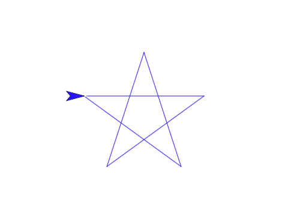
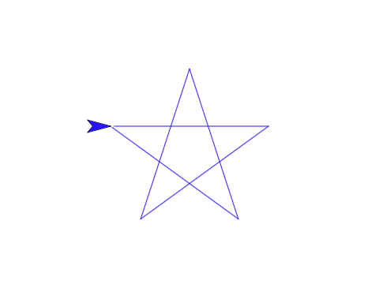

Quick Announcements
Check out the Piazza forums for this class
Links to next week's reading are in Piazza
- Also on syllabus, but one of the links is behind a paywall
Ruben Gamboa
Professor
Check out the Piazza forums for this class
Links to next week's reading are in Piazza


 


You do not have to complete (or even start) these challenges, but you may not leave early unless you do
And before you leave, check with me so that I know the projects are shared correctly